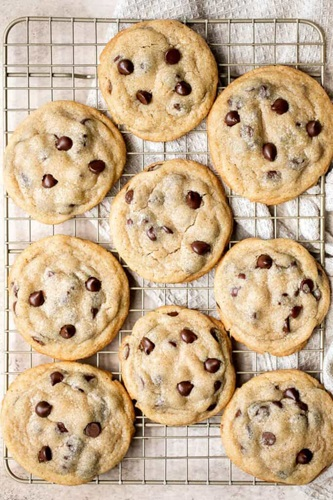

Chocolate chip recipe

Ingredients
- 1 cup Butter(In order to create the texture of this recipe properly, use softened butter)
- 1 cup of light brown sugar
- 3/4 granulated sugar
- 2 large eggs
- 2 teaspoons vanilla extract
- 3 cups All-purpsoe flour
- 1 teaspoon Baking soda
- 1/2 teaspoon Salt
- 1 cup Chocolate chips (An alternative could be breaking apart a choclate bar)
Equipment needed to make these cookies
- Meausring cups and spoons
- mixing bowl
- Large half sheet baking pan
- silicone baking mat
- wire cooling rack
Instructions
- Preheat oven of 350F. Line a large half sheet baking tray with silicone baking mat or parchment paper and set aside
- In a large mixing bowl, use a hand mixer or stand mixer cream together butter and sugars on medium speed until fluffy, about two minutes
- Add egg and vanilla, and beat on low until incorportated/ Add flour, baking soda, and salt and beat until just combined. Fold in the chocolate chips.
- Use a medium cookie scoop to scoop out two table spoons of cookie dough. Use your hands to roll ir into a ball(this will ensure cookies with smooth edges). Place the cookie balls onto the lined baking sheet, spaced at least 2 inches apart(you can fit about 6-8 on a large cookie sheet). If you dont care to have smooth edges, you can just drop the cookie dough onto the baking sheet without smoothiing it into a ball.
- Bake for 8-10 minutes, until edges just start to brown. DO NOT OVERBAKE. The cookies may not look down in the middle, but they will continue to cook as they are cooling.Remove from oven and alllow the cookues to cool in the baking sheet for 5 minutes, then carfully press in some chocolate chip cookies into the top of the cookies(if desired), and tnrafer to a wire cooling rack to cool completely.